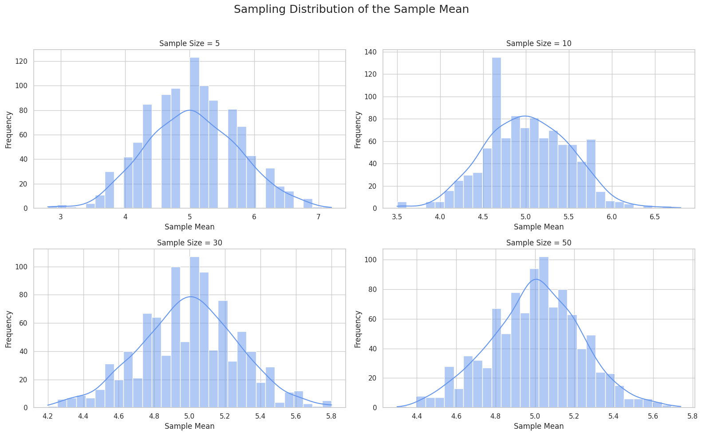

Problem 1
📊 Exploring the Central Limit Theorem through Simulations
🯠Motivation
The Central Limit Theorem (CLT) is a key idea in statistics. It says that the sampling distribution of the sample mean will become approximately normal, even if the original population is not — as long as the sample size is large enough.
This simulation-based approach helps us understand how and why this works.
🧪 1. Simulating Sampling Distributions
We use different population types to demonstrate the CLT:
- 🟦 Uniform Distribution
- 📈 Exponential Distribution
- ⚪ Binomial Distribution
Each distribution is used to generate a large synthetic dataset.
📉 2. Sampling and Visualization
For each distribution, we:
- Choose sample sizes: 5, 10, 30, 50
- Randomly draw samples and calculate their means
- Repeat 1000 times to build a sampling distribution
- Plot histograms to observe how they approach a normal shape
💻 Python Code
```python import numpy as np import matplotlib.pyplot as plt import seaborn as sns
sns.set(style="whitegrid")
def simulate_clt(population_func, pop_params, sample_sizes, n_simulations=1000): plt.figure(figsize=(16, 10))
for i, n in enumerate(sample_sizes):
sample_means = []
for _ in range(n_simulations):
sample = population_func(size=n, **pop_params)
sample_means.append(np.mean(sample))
plt.subplot(2, 2, i + 1)
sns.histplot(sample_means, bins=30, kde=True, color="cornflowerblue")
plt.title(f"Sample Size = {n}")
plt.xlabel("Sample Mean")
plt.ylabel("Frequency")
plt.suptitle("Sampling Distribution of the Mean", fontsize=18)
plt.tight_layout(rect=[0, 0, 1, 0.96])
plt.show()
sample_sizes = [5, 10, 30, 50]
print("🟦 Uniform Distribution") simulate_clt(np.random.uniform, {'low': 0, 'high': 10}, sample_sizes)
print("📈 Exponential Distribution") simulate_clt(np.random.exponential, {'scale': 2.0}, sample_sizes)
print("⚪ Binomial Distribution") simulate_clt(np.random.binomial, {'n': 10, 'p': 0.5}, sample_sizes)

🔬 3. Parameter Exploration 🧷 Shape of Original Distribution Uniform is already symmetric → fast convergence to normality.
Exponential is skewed → still becomes normal with larger samples.
Binomial is discrete → smooths out with increased sample size.
🧮 Impact of Sample Size As sample size increases:
The variance of the sample mean decreases
The distribution of the mean becomes more concentrated around the true mean
Results become more predictable and stable
🌠4. Practical Applications The CLT is widely used in:
📠Estimating unknown population parameters
ğŸ Quality control and manufacturing checks
💼 Risk modeling and finance
📊 Survey analysis and polling
It allows us to use small samples to make big conclusions — safely.
📦 Deliverables ✅ Python code or Jupyter Notebook simulations
✅ Histograms for each sample size and distribution
✅ Discussion on the results and theory of CLT
🧠Conclusion The Central Limit Theorem shows us that averages behave predictably — even when the underlying data does not. This makes it one of the most powerful tools in all of statistics and data science.
“The average of the averages is almost always normal.†ğŸŒ